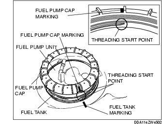
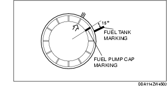
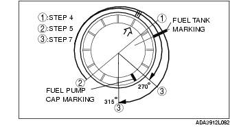

Fuel pump unit removal/installation [ZY]
- • Fuel line spills and leakage are dangerous. Fuel can ignite and cause serious injuries or death and damage. Fuel can also irritate skin and eyes. To prevent this, always complete the "Fuel Line Safety Procedure".
- • Fuel line spills and leakage are dangerous. Fuel can ignite and cause serious injuries or death and damage. Fuel can also irritate skin and eyes. To prevent this, before performing the fuel pump unit removal/installation, always complete the "Fuel Leak Inspection After Fuel Pump Unit Installation".
- • A person charged with static electricity could cause a fire or explosion, resulting in death or serious injury. Before draining fuel, make sure to discharge static electricity by touching a vehicle.
1. Follow "BEFORE SERVICE PRECAUTION" before performing any work operations to prevent fuel from spilling from the fuel system. (See BEFORE SERVICE PRECAUTION [ZY].)
2. Disconnect the negative battery cable.
3. Remove the fuel tank assembly. (See FUEL TANK REMOVAL/INSTALLATION [ZY].)
4. Remove in the order indicated in the table.

|
1
|
Fuel pump cap
(See Fuel Pump Cap Removal Note.)
|
|
2
|
Fuel pump unit
|
5. Install in the reverse order of removal.
6. Complete the "AFTER REPAIR PROCEDURE". (See AFTER SERVICE PRECAUTION [ZY].)
Fuel Pump Cap Removal Note
- • The cap could be damaged if the SST is used with any play between the cap and the SST. Securely install the SST so that there is no gap between the SST tabs and the side of the cap.
1. Remove the fuel pump cap using the SST.

Fuel Pump Cap Installation Note
- • The fuel pump unit will rotate and cannot be secured in the specified position if there is any gasoline on the gasket. Thoroughly wipe away all gasoline from the gasket.
- • Make the markings to be easily visible when the fuel pump cap is installed.
1. Mark the fuel pump cap and the fuel tank at the point where the threading of each part begins as shown in the figure.

2. Align the fuel tank and fuel pump unit alignment marks as shown in the figure.

3. Align the fuel tank and fuel pump cap markings.
4. Rotate the fuel pump cap counterclockwise until the cap marking is approx. 15° away from the fuel tank marking as shown in the figure.

5. While keeping the fuel pump unit from rising up, tighten the fuel pump cap by hand 180° clockwise.
- • The cap could be damaged if the SST is used with any play between the cap and the SST. Securely install the SST so that there is no gap between the SST tabs and the side of the cap.
6. Install the SST as shown in the figure.

- • Replace the fuel pump cap and gasket if the specified rotation angle and tightening torque cannot be obtained due to fuel tank deformation or changes due to deterioration.
- • Replace the fuel tank if specified rotation angle and tightening torque cannot be obtained even after replacing the fuel pump cap and gasket.
7. Using the SST, tighten the fuel pump cap within the specified rotation angle and cap tightening torque without shifting the fuel tank and fuel pump unit alignment marks.

Rotation angle
270-315°
Fuel pump cap tightening torqueFuel Leak Inspection After Pump Unit Installation
1. Before installing the fuel tank, verify that there is no leakage when a pressure of +5.9 kPa {+44 mmHg, +1.7 inHg} is applied to the fuel tank.
2. Install the fuel tank assembly. (See FUEL TANK REMOVAL/INSTALLATION [ZY].)
3. Start driving the vehicle from a standstill or brake suddenly 5-6 times at a low speed.
4. Stop the vehicle and verify from outside the vehicle that there is no fuel leakage around the fuel pump unit.